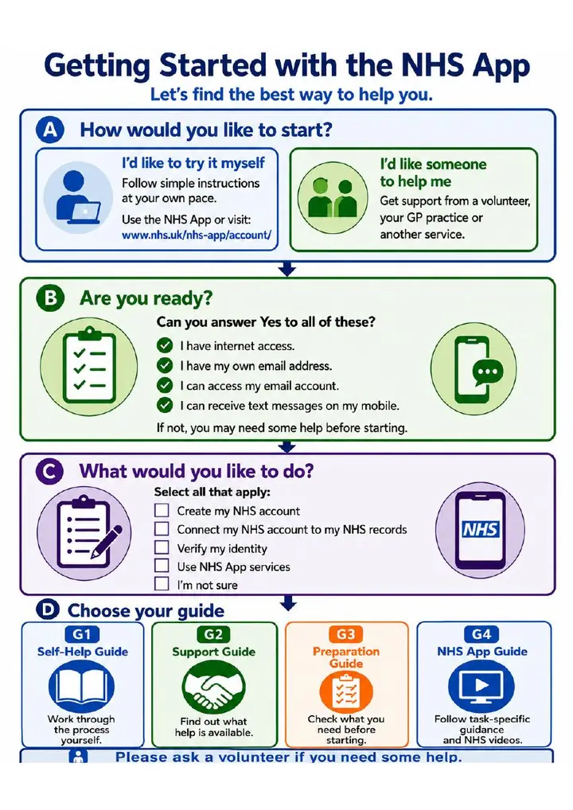
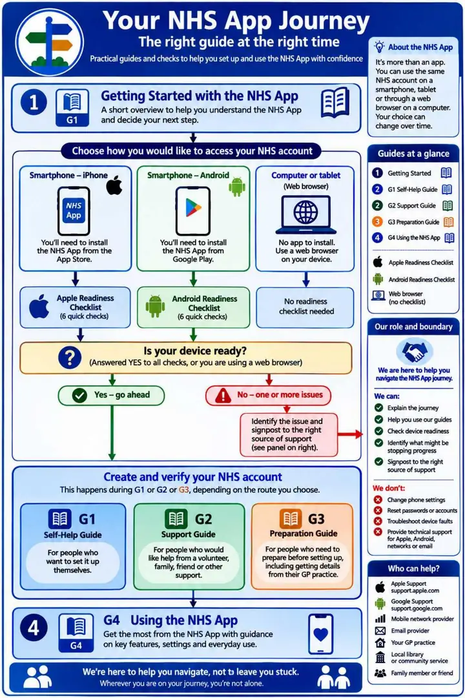

Getting Started overview
Choose whether to try it yourself or get help, check the essentials, and select G1, G2, G3 or G4.
Begin with the overview, then choose the route that best matches what you want to do.

Choose whether to try it yourself or get help, check the essentials, and select G1, G2, G3 or G4.

Choose Apple, Android or browser access, check readiness where needed, and move to the relevant guide.
Install the NHS App from the App Store, after completing the Apple readiness checks.
Apple checksInstall the NHS App from Google Play, after completing the Android readiness checks.
Android checksNo app to install and no readiness checklist. Use a browser on a computer or tablet.
Open NHS browser access